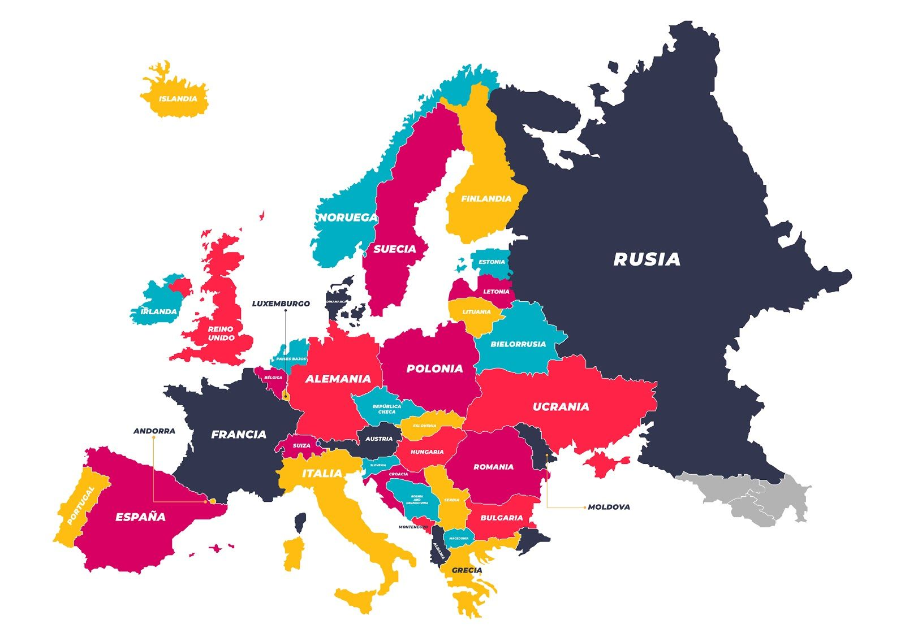
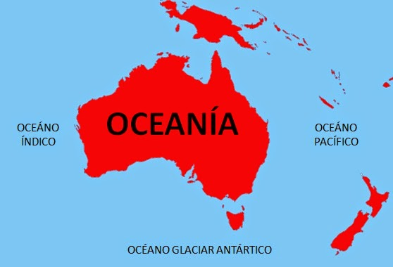

| Continentes |
| América |
| Europa |
| Asia |
| Africa |
| Oceania |
| Antártica |
- Canadá
- Belice
- Nicaragua
- Venezuela
- Chile
|
- Bulgaria
- Dinamarca
- Noruega
- Ucrania
- Irlanda
|
- Filipinas
- Armenia
- Bimaria
- Malasia
- Vietnam
|
- Ghana
- Angola
- Zimbaue
- Ugranda
- Kenia
|
- Figi
- Naunu
- Tonga
- Nueva Zelanda
- Palaos
|
- La antartida argentina (Argentina)
- La independencia Rosas(Nueva Zelanda
- Adeline Land (Francia)
- Territorio Antartico Autraliano (Australia)
- Islandia Pedro I o Tierra de la Reina Maud (Noruega)
- Antartica chilena (Chile)
- Marye Byrd (sin pertenencia)
|
 |
 |
|
 |
 |
 |